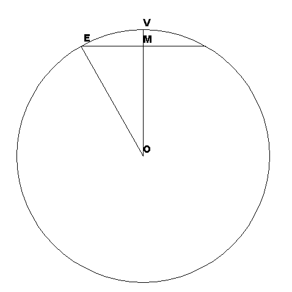
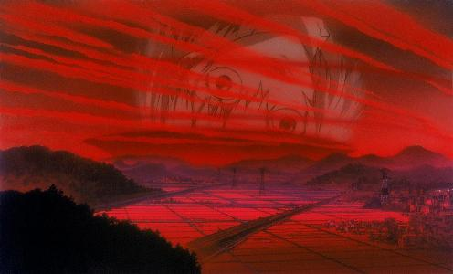

After almost a year, and some time spent kicking around on various forums, original impressions reconsidered.
Context
I put a strange interpretation spin on things, having come from a background of exposure to Transhumanist memes, so view Instrumentality as a species of Singularity. As part of the baggage, I prefer to avoid dualist explanations, re-interpreting things where necessary, to reflect the idea that a persona does not execute independent of any substrate, but may be transferred between compatible substrates.
Also EoE remains one of the most harrowing things I've watched. I will watch it a third time someday, when I have managed to distance myself from it.
Rubber Geometry
And I don't mean topology...
The NGE Fan-Geeks Commentary Project quotes some of the geometry of the geofront in ep 1, scene 4, cut 168. This makes clear that not only is the anime physics of necessity rubber, but so is some of the geometry.
The diagram shows a sketch of the NERV geofront, a sphere notionally 89% full according to ep 20 i.e. 11% of it is open as a spherical cap. From the latter page we see that the volume of a spherical cap of height h (VM in the diagram) cut from a sphere radius R (OE or OV) is πh²(3R-h)/3; the volume of the whole sphere is 4πR³/3. If we let x = h/R, then volume of cap/volume of sphere is x²(3-x)/4, = 0.11 in our case.
A little computation shows that x ~ 0.412, so OM = 0.588R, and since OME is a right-angled triangle, (ME/R)² = 1 - (0.588)², so ME is 0.809R.
But it is also claimed that
The Geofront is a sphere with a diameter of 13.75 km). However, 89% of it is buried and only the top part (900 m high and 6 km across) is open.
i.e. R = 6.875 km, 2ME = 6km and h = 0.9km. The drawing is done with R and h in those proportions. There is no way to reconcile these figures, which can be derived with a little high-school geometry.
Taking the R and h values, we have ME² = 6.875² - 5.975² = 11.565, so ME = 3.4km, or about 7km across, which is not too bad, but x = h/R = 0.131, giving a fraction of volume in the cap of about 1.2% of the sphere, about 1/10 of what was stated.
Perhaps that other 10% is distributed across the volume as all the other large caverns down under Terminal Dogma — even if that is a hand-waving retcon.
Misato and Shinji
I didn't interpret ep 23 as Misato coming on to Shinji (as extra-textual material suggests); and unless the scene we were shown was a watered-down for TV version, I don't think that a naif like Shinji would have either. I think his rejection truly reflected his inability to handle any form of human contact, even a maternal comforting hug. Now it is a separate issue whether Misato could properly distinguish between her own need for the same sort of infantile comfort, and her clear habit of sex for comfort — but we equally don't see her going off to find an obvious victim, like Hyuga Makoto, following rejection at home.
And in the TV Complementation sequence, I parsed the replay as Shinji rejecting her once again, to be followed by other rejection based on her general lifestyle, not the exemplar of the need to dirty herself, that led to the subsequent condemnation by the other women. After all, there was nothing in real life that led to the “I hate you!” calls for Shinji.
On an artistic level, if this was the conscious intent, then I feel that it robs the “adult kiss” scene from EoE of its power. In that situation, she has tried reasoning and hectoring, and gotten no response — so tries the “nuclear option”, something that might reasonably motivate a 14-year-old who hasn't gotten any, not something she knew from past experience to be futile.
Who is Rei?
Some unholy fusion of Lilith and Ikari Yui. I am not convinced that her body is entirely Yui's, which is the prevailing orthodoxy in fan fora I frequent — the incomplete botched salvage, the strange behaviour of Rei's flesh in EoE, speaks to me that she is a hybrid on that level.
To that extent, I find it suprising that so many people go “Ewww! Incest!” at the mention of Shinji/Rei, and none ever go “Ewww! rishathra!” or “Ewww! bestiality!”
And the persona?
A human engram running on a substrate that is not human would clearly diverge from its original nature, just as if it were imprinted on a dolphin brain, let alone something more alien.
Copyable engrams make the problem of who is in Eva-00 simpler, as it can indeed be an imprint of Rei-I, without worries about Lilith's soul having to bilocate; the not quite human substrate is entirely consistent with the three-way Rei conversation during Complementation, talking about her true nature being other than human.
Clearly she is more than merely human as her AT field intervention, her equality in status with Kaworu, in the final confrontation in ep # 24 showed.
Who can pilot which Eva?
Unit-00 is a special case, Yui and Kyoko were experimenters in Gehirn who underwent some contact experiments. Unit-04 was written off. All of 05-13 were piloted by Kaworu dummy plugs.
Clearly all Eva pilots and pilot candidates are born after 2I (Kaworu being a special case); and all have lost their mothers. But I find it implausible that NERV was able to somehow bottle the souls of all the dead mothers that the strong maternal hypothesis demands. It also makes the worth of the dummy plug project seem small, if Rei could only have piloted 00 and 01; and flies in the face of Kaworu's use in nine separate “harpies”.
I find a weaker hypothesis plausible — that the Eva can be fooled by a dummy plug would suggest that any motherless child could emote suitably within the womb-like environment of the entry plug. That still leaves the issue of who was in 03 to be compatible with Touji open, along with how specific the “his core” was when Ritsuko spoke about the preparations in ep #17.
Would everyone want to come back?
While watching the closing sections of EoE, I saw this
Show your working
Start by taking 160km/100 miles as a round number for Giant Naked Rei (GNR)'s height (though actually she looks taller than 12 geofront diameters), putting her centre of mass about 50 miles up — not enough that we have to worry about inverse square effects.
Earth's escape velocity is 11.2km/s, which is the speed attained by falling one radius (4,000 miles) under 1g; and kinetic energy goes as velocity squared, so an asteroid with relative velocity 22.4km/s at infinity has the energy of a 16,000 mile fall under 1g; add in the potential energy from falling, that's a 20,000 mile fall or 400 times the energy per unit mass that GNR has.
Assume GNR to have the density of water (or human flesh, much the same in bulk), while the asteroid is mainly silicate (density about 2.7 times that of water), then the asteroid has energy about 1000 times as much per unit volume. 1000 = 10³, so GNR will impact to zero altitude with the same total energy as an asteroid about one tenth her dimensions.
The big assumption is about her density - but the splash image is clearly of something significantly denser than air; and Lilith's regeneration showed that she was not limited by anything quite so tawdry as classical conservation of stress-energy.
Now some people have looked in the foreground, and what they see combined with the DC material (also in Death) from the Katsuragi expedition that suggests that with the anti-AT Field, all lifeforms will have been dissolved to LCL — but that now the trees have returned (having done their equivalent of imagining themselves in their own hearts), and so everything else is in good shape for everyone to come back and carry on as before, picking up from where they all left off — taking just one example of which in Pengel's Shinji/Asuka shipping HAPPY END OF EVA fanart.
By contrast, I looked at the background and saw a Giant Meteor Impact, without a Bruce Willis intervention. That splash implies that 100-mile-high Rei had managed to magic herself to some significant density, at least similar to that of flesh, enough that she packs the total energy of a mountain-size dinosaur killer, and, sprawling full length in the Pacific will cause significant tsunamis, if not also triggering tectonic activity around the whole Ring of Fire as the plates flex under her weight.
This led to my interpretation of the various psychedelic phenomena at the end as much of humanity decamping to be stardust along with Yui — having suffered post-2I, almost no one would want to come back to the ruins of Earth. They would remain in the red band in the sky bled from Rei's neck as disembodied mentalities released from having previously been absorbed into Instrumentality. The pilots would be special cases in their privileged state, and effectively forced to re-embody, in what I hoped would be some perfected, post-human, post-mortal form (consistent with the need to be re-imagining themselves into bodies).
Pilot privilege
Shinji obviously has privileged access to the Sysop; but Asuka also is in an anomalous position as pilot and sacrifice, more intimately involved in the ritual than others, and #2 in Complementation. Together all that might argue some special status in the hierarchy.
Perfected bodies
If a body is forged from will alone, what need has it of messy organs?
This form of self-resurrection, something like the theological position of the risen body, was the model I had in mind. And it avoids the need to handwave morphic fields to fill in the details of cell biochemistry above and beyond the “imagine themselves in their own heart” level.
Would you Adam and Eve it?
This is a heresy, here just out of a puckish sense of humour. I don't believe it, and don't want to…
…but it is possible to reconcile the "everyone can resume human form" statement and the *spit* Adam and Eve scenario — if the way to resume human form is to choose be re-incarnated in a new-born.
Objections and rebuttals
- Q: Why would you have to "imagine yourself in your own heart" in order to be reincarnated? (Or, as Lisa Douglas would say, "reincarcerated".)
A: An act of will to consent or to enable the process. -
Q: In what way would being reincarnated in a new body born to different parents constitute returning "to your original form"?
A: The form is human as opposed to a puddle of LCL (possibly with a bit of “they all look the same to me” thrown into the mix) -
Q: This is plainly not how Asuka returned.
A: The pilots can be argued to be special cases due to their unique circumstances.
For the uninitiated, Cockney rhyming slang — “Adam and Eve”–believe.
Things I missed
I did manage to dismiss the notorious scene at the start of EoE as sounds of weeping, and didn't look at all closely at what seemed to be yet another Shinji staring at his hand shot. Nor did I notice that the VA for Makoto in the dub of EoE sounded black when I re-watched with the dub.
Write to the author at — webmaster at steve gilham dot com.